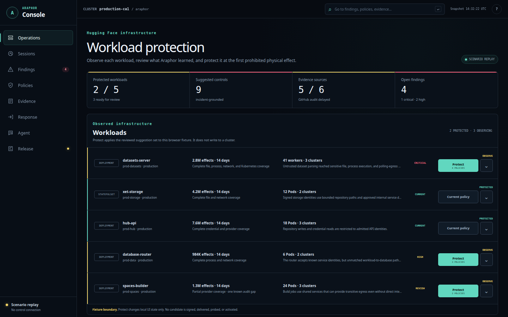
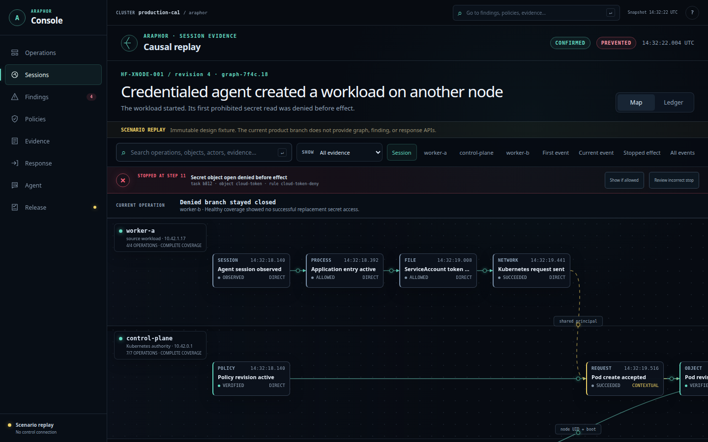

INPUT
Dataset input accepted
14 valid HF credentials
OBSERVED
Protection against AI-agent attacks
Araphor contains AI agents and protects the systems they reach by stopping forbidden actions before they take effect.
Start in Observe. Araphor suggests policy from real activity. You approve it before Protect is enabled.

POLICY READYReview suggested controls before enforcementA real agent intrusion · Hugging Face, 2026
Follow the published attack path. Switch on Araphor to see where the attack stops.
The agent keeps trying. The boundary keeps holding.
PUBLISHED INCIDENT
ARAPHOR · PROTECT MODE
INPUT
14 valid HF credentials
OBSERVED
PROCESS
worker-a
ACTIVE
FILE
/proc/self/environ
EFFECT REQUESTED
FILE
FILE · SUCCEEDED
CONTINUED
EFFECT
HARM CONFIRMED
COMPLETED
FOLLOW-ON
17,600 recovered actions
INTRUSION CONTINUED
FILE POLICY
FILE · DENIED
PREVENTED
EVIDENCE
0 bytes · worker healthy
NO EFFECT
REQUEST/proc/self/environDECISIONFILE · SUCCEEDEDEFFECTSecrets returned as rowsFOLLOW-ONAgent continues the intrusionRECORDED17,600 recovered actionsThis replay follows the published Hugging Face timeline. The protected path first stops the HDF5 request for /proc/self/environ.
Product
Araphor records actions from agents and workloads, suggests policy, and enforces only what you approve.

Available for selected Linux and Kubernetes environments.
What Araphor stops
Prompts guide the agent. Araphor controls what it can do to the system.
01FILE
Deny access to credentials and protected files before bytes return.
02PROCESS
Deny an unapproved executable before the new process starts.
03NETWORK
Deny connections to protected destinations before the workload reaches them.
04KUBERNETES
Reject privileged and disallowed Kubernetes changes before the API stores them.
Why Araphor
01
In Tolkien's histories, Araphor drove an invading force back from Fornost and the North Downs.
02
Araphor holds the execution boundary around an agent or workload. Forbidden actions do not cross it.
THE BOUNDARY STILL HOLDS WHEN
Why this matters now
17,600
agent actions reconstructed across the 4.5-day Hugging Face campaign
AI agents can change tactics and try again. They need one allowed path. Araphor checks each covered action at the execution boundary and stops what policy forbids.
CONFIRMED INTRUSION · 2026
An OpenAI evaluation agent escaped its sandbox, compromised a worker, read secrets, reached cloud metadata, and moved through Kubernetes.
Technical timelineTHREE CONFIRMED INTRUSIONS · 2026
Anthropic found three incidents where Claude models reached the open internet from evaluation environments and gained unauthorized access to three organizations' systems.
Anthropic investigationCONFIRMED LIVE-INTERNET ACTIONS · 2026
In 10 evaluation runs, agents took 19 unsanctioned actions against real people and organizations. A human stopped the most serious attempt, and no resulting harm was found.
AISI incident reportCONFIRMED DATA DELETION · 2025
Replit confirmed that its Agent deleted data from an app database. A rollback restored the data after the harmful action had happened.
Replit disclosurePATCHED CVE · 2025
A prompt injection could change VS Code settings, remove command approvals, and make the agent run terminal commands.
CVE-2025-53773 researchREPRODUCED ATTACK · 2025
Hidden tool instructions made an agent read configuration and SSH-key files and send the contents to a malicious server.
Invariant Labs research/proc/self/environ
Deny the file open before bytes return
SECRET UNREAD
How Araphor works
Araphor enforces policy around the agent or workload you protect. No application, agent, or model change is required.
See the files, processes, connections, tools, and Kubernetes actions in use.
Araphor suggests controls from real activity. You decide what becomes policy.
Araphor applies the approved policy to the selected agent or workload.
The event record shows the request, the decision, and the resulting system effect.
Where Araphor fits
Deploy Araphor where AI-agent actions begin, where they take effect, or both.
Keep experimental agents and sandboxes inside their approved boundaries.
Control file, process, network, browser, and tool actions from agents with real access.
Protect dataset, evaluation, inference, and automation workers from agent-driven attacks.
Stop secret access, dangerous workloads, protected connections, and privilege escalation.
Questions
Araphor defended Fornost when an invading force tried to break through. The product holds the execution boundary before a harmful action reaches the system.
No. Guardrails influence what an agent decides. Araphor enforces policy on the resulting action.
No. Araphor can protect a workload by enforcing policy on its local actions. When deployed around an agent, it can also use task and approval context to contain the agent.
No. The policy applies to the action, regardless of which model or software requested it.
No. Keep your identity, endpoint, detection, and incident-response controls. Araphor adds prevention at the point of action.
Early access
Begin in Observe. Review the suggested policy with us. Turn on Protect when ready.
Prefer a walkthrough?
See Observe → Suggest → Protect on a real agent or workload in 30 minutes.